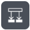

データ操作 ＞ 作成（Compose）
mock: data-compose
コントロール ＞ 条件（Condition）
mock: control-condition

条件Office 365 Outlook ＞ メールの送信 (V2)
mock: outlook-send-email-v2
SharePoint ＞ 項目の作成
mock: sharepoint-create-item
Microsoft Teams ＞ チャットまたはチャネルにメッセージを投稿する
mock: teams-post-message
コントロール ＞ それぞれに適用する（Apply to each）
mock: control-apply-to-each
データ操作 ＞ JSON の解析（Parse JSON）
mock: data-parse-json
データ操作 ＞ 選択（Select）
mock: data-select
コントロール ＞ スコープ（Scope）
mock: control-scope
コントロール ＞ スイッチ（Switch）
mock: control-switch
コントロール ＞ Do until
mock: control-do-until
コントロール ＞ 終了（Terminate）
mock: control-terminate
スケジュール ＞ 遅延（Delay）
mock: schedule-delay
SharePoint ＞ 複数の項目の取得（Get items）
mock: sharepoint-get-items
SharePoint ＞ ファイルの作成（Create file）
mock: sharepoint-create-file
━ トリガー ━
トリガー ＞ フローを手動でトリガーする
mock: trigger-manual
トリガー ＞ スケジュール ＞ 繰り返し（Recurrence）
mock: trigger-recurrence
トリガー ＞ Forms ＞ 応答が送信されたとき
mock: trigger-forms-response
トリガー ＞ Outlook ＞ 新しいメールが届いたとき (V3)
mock: trigger-outlook-newmail
トリガー ＞ SharePoint ＞ 項目が作成されたとき
mock: trigger-sp-itemcreated
トリガー ＞ Teams ＞ チャネルに新しいメッセージが追加されたとき
mock: trigger-teams-channelmsg
━ その他（フロー解読系）━
Power Automate ＞ エクスポート（パッケージ .zip）
mock: pa-export-menu
Microsoft 365 Copilot ＞ チャット
mock: m365-copilot-chat